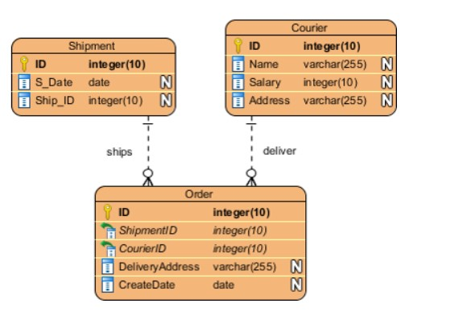
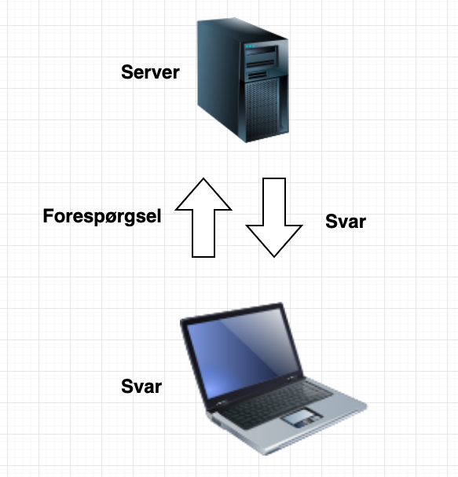

Grafisk design og serverer

White space: White space er det hvide område rundt om billeder eller tekst hvor der ikke står noget, for at gøre opmærksom på andet
Kontrast: Der kan være kontrat i form af størrelse,bredde,lys,farve,position. Det er meningen man skal ændre på noget for at gøre opmærksom på noget andet
Gentagelser: meningen med gentagelser er at skabe konistens for ligesom at gøre det mere akkurat
Justering: meningen med justering er at skabe balance og ligesom at udrydde uorden
Nærhed:hvis man sætter 2 objekter tæt på hinanden har de som regel noget med hinanden at gøre, det er princippet med nærhed. At skabe en form for lighed mellem 2 objekter
Det er en form for strukturel diagram, der kan hjælpe en med at et godt database design
grunden til at det bliver kaldt "Entity relationship diagram" er fordi at det hjælper en med at holde overblik
over sin database og hvordan den hænger sammen, det sikre at dataerne hænger korret sammen.
eksempel på entity diagram under

.
Til at starte med ville jeg prøve at skabe en slags forbindelse med mit flappy bird spil og serveren.
meningen med det var at serveren selv skulle hente highscoren fra flappy bird spillet.
jeg fik det til at fungere og lavede en href på min hjemmeside som førte dirkete til mit flappy bird spil.
På vegne af en browser beder HTTP, der er en protokol, en server om specifikke data. Derefter svarer serveren så med en protokolkode og dataen. Dette kan være et HTML-dokument, et billede eller en fejlkode. På denne måde kan browseren bygge siden op med de data, som den har modtaget fra serveren.
Client/server, en netværkstype, hvor én computer kan være server og andre kan som klienter, efterspørge information. Man kan tænke på det ligesom en resturant, klienten er i vores tilfælde så personen der skal bestille mad (information) og tjeneren (serveren) kommer så med det mad (information) der er blevet efterspurgt.
nedstående billede er en model af typisk client/server model
